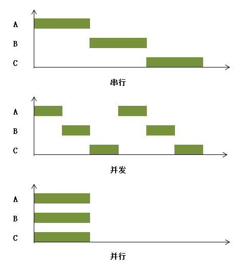

为了更清楚地解释这三个概念，我们来举一个例子。假设我们有A、B、C三项工作要做，那么我们有以下三种方式来完成这些工作：

第一种方式，先开始做工作A，完成之后再开始做工作B，以此类推，知道完成工作C。在这种情况下实际上只需要投入一个人。
第二种方式，先开始做工作A，做了一会之后再开始做工作B；工作B做了一会再开始做工作C，工作C做了一会又重新开始做工作A，以此类推，直到所有工作都完成。这样看上去像是在同时进行三个工作一样，但是这种方式可以只投入一个人。
第三种方式需要投入三个人，每个人负责一项工作，这三个人在同一时刻齐头并进地完成这些事情。这种方式比其他两种方式都要快。
在软件开发领域，这三种方式分别被称为串行、并发和并行。串行就是一次一个任务、每个任务完成之后再进行下一个任务的行为，这种方式耗费的时间往往是最长的。并发就是在一段时间内以交替的方式去完成多个任务，它可能会加速任务的执行，也可能和串行消耗相同的时间。例如，如果一个任务在等待某些资源或者执行某些耗时但不占用CPU的操作（例如IO操作），这段时间让CPU去处理其他任务，就不会白白浪费时间，从而缩短整个程序的执行时间；而如果每个任务都是CPU密集型任务，那么使用并发并不会比串行快多少。并行就是以齐头并进的方式同时处理多个任务，它一定会缩短程序的执行时间。
从硬件的角度来说，在一个处理器一次只能够运行一个线程的情况下，由于处理器可以使用时间片分配的技术来实现在同一段时间内运行多个线程，因此一个处理器就可以实现并发。而并行则需要靠多个处理器在同一时刻各自运行一个线程来实现。
多线程编程的实质就是将任务的处理方式由串行改为并发或并行，以提高程序对CPU资源的利用率，最大限度地使用系统资源。至于多线程实现的到底是并发还是并行，则要视具体情况而定。在CPU比较繁忙，资源不足的时候，操作系统只为一个含有多线程的进程分配仅有的CPU资源，这些线程就会为自己尽量多抢时间片，这就是通过多线程实现并发，线程之间会竞争CPU资源争取执行机会。而在CPU资源比较充足的时候，一个进程内的多线程，可以被分配到不同的CPU资源，这就是通过多线程实现并行。这个分配过程是操作系统的行为，不可人为控制。所有，如果有人问我我所写的多线程是并发还是并行的？我会说，都有可能。
多线程编程中经常遇到的一个问题就是对于同样的输入，程序的输出有时候是正确的而有时候却是错误的。这种一个计算结果的正确性与时间顺序有关的现象就被称为竞态（Race Condition）。
下面的例子中，在主线程中创建了4个线程，每个线程都执行相同的任务，即调用20次计数器并输出计数器的值。
// Code 2-1
public class RaceConditionDemo {
public static void main(String[] args) {
Runnable task = () -> {
for (int i = 0; i < 20; i++) {
System.out.println(Thread.currentThread().getName() + " : " + Counter.getInstance().count());
}
};
Thread thread1 = new Thread(task);
Thread thread2 = new Thread(task);
Thread thread3 = new Thread(task);
Thread thread4 = new Thread(task);
thread1.start();
thread2.start();
thread3.start();
thread4.start();
}
}
class Counter {
private static final Counter INSTANCE = new Counter();
private int countValue = 0;
private Counter() {}
int count() {
if (countValue >= 100) {
countValue = 1;
} else {
countValue++;
}
return countValue;
}
static Counter getInstance() {
return INSTANCE;
}
} 下图是某次运行后得到的结果（偶现，非必现）：
理论上来说，每次调用Counter类的count方法，得到的计数值都是不一样的。但是上面的结果中，却出现了两个一模一样的计数值。上述程序的输出有时候是正确的而有时候是错误的，可见该程序在多线程环境下运行出现了竞态。
下面我们来分析一下为什么会出现竞态。因为每个线程里只用到了计数器的count方法，因此，count()是导致竞态的直接因素。进一步来说，导致竞态的常见因素是多个线程在没有采取任何控制措施的情况下并发地更新、读取同一个共享变量。count()所访问的实例变量countValue就是这样一个例子：多个线程通过调用count()并发地访问countValue，显然这些线程没有采取任何控制措施。
count()中的语句“countValue++”看起来像是一个操作，但它实际上相当于如下伪代码所表示的3个指令：
load(countValue, reg); //指令1：将变量countValue的值从内存读到寄存器reg
increment(reg); //指令2：将寄存器reg的值加1
store(countValue, reg); //指令3：将寄存器reg的内容写入countValue对应的内存空间 如果每个线程都等其他线程完成指令1、2、3之后再调用这个方法，那么就不会产生问题。但实际上，这些指令是有可能同时在不同线程里执行的。比如说，两个线程可能在同一时间读取到countValue的同一个值，一个线程对countValue所做的更新也可能“覆盖”其他线程对该变量所做的更新，这些都有可能导致各个线程拿到相同的计数值。
上面的例子其实是一种竞态的典型模式，它被称为read-modify-write。该操作可被细分为这样几个步骤：读取一个共享变量的值（read）, 然后根据该值做一些计算（modify）, 接着更新该共享变量的值（write）。一个线程在执行完read操作后到开始执行write操作前的这段时间内其他线程可能已经更新了共享变量的值，但是该线程把根据旧值计算出来的结果更新到共享变量，这使得其他线程对该共享变量所做的更新被“覆盖”，即造成了更新丢失。
另外一个典型的竞态模式是check-then-act。该操作可以被细分为这样几个步骤：读取某个共享变量的值，根据该变量的值决定下一步的动作是什么。例如，上面的if-else语句就是该模式的一个实例：
if (countValue >= 100) {
countValue = 1;
} else {
countValue++;
} 一个线程在执行完check操作后到开始（或者正在）执行act操作的这段时间内，其他线程可能已经更新了共享变量的值而使得if语句中的条件变为不成立，那么此时该线程仍然会执行操作，尽管这个操作所需的前提实际上并未成立。
根据以上描述我们可以更进一步来定义竞态：竞态（Race Condition）是指计算的正确性依赖于相对时间顺序或者线程的交错。根据这个定义可知，竞态不一定就导致计算结果的不正确，它只是不排除计算结果时而正确时而错误的可能。
当一个线程由于各种原因（例如时间片用完、主动调用sleep方法等）被迫或主动暂停其运行时，另外一个线程可以被操作系统选中来占用处理器开始或者继续其运行。这个过程就叫做线程上下文切换。
可见，看似是连续运行的线程，实际上有可能是以断断续续运行的方式使其任务进展的。这种方式意味着在线程切换的时候操作系统需要保存和恢复相应线程的进度信息，这个进度信息就被称为上下文。
从Java的角度来看，一个线程的生命周期状态在RUNNABLE状态与非RUNNABLE状态之间切换的过程就是一个上下文切换的过程。当一个线程的生命周期状态由RUNNABLE转换为非RUNNABLE时，我们称这个线程被暂停，此时操作系统会保存相应线程的上下文。而一个线程的生命周期状态由非RUNNABLE状态进入RUNNABLE状态时，我们就称这个线程被唤醒。一个线程被唤醒仅代表该线程获得了一个继续运行的机会，而并不代表其立刻可以占用处理器运行。当被唤醒的线程被操作系统选中占用处理器继续其运行的时候，操作系统会恢复之前为该线程保存的上下文，以便其在此基础上进展。
按照导致上下文切换的因素划分，可以将上下文切换分为自发性上下文切换和非自发性上下文切换。自发性上下文切换指线程由于其自身因素导致的切出。一个线程在其运行过程中执行下列任意一个方法都会引起自发性上下文切换：
另外，如果线程发起了I/O操作（如读取文件）或者等待其他线程持有的锁（锁的概念会在后续文章介绍）也会导致自发性上下文切换。
非自发性上下文切换指线程由于线程调度器的原因被迫切出。导致非自发性上下文切换的常见因素包括线程的时间片用完或者有一个比当前线程优先级更高的线程需要运行。此外，JVM的垃圾回收动作也可能导致非自发性上下文切换。这是因为垃圾回收器在执行垃圾回收的过程中可能需要暂停所有应用线程才能完成其工作。
操作系统在保存和恢复上下文的过程中需要一定的性能开销，因此在使用多线程编程的过程中如何避免频繁的上下文切换也是我们需要考虑的一个问题。
理想情况下我们希望线程一直处于RUNNABLE状态。但是，事实并非如此，导致一个线程可能处于非RUNNABLE状态的因素除了资源限制之外，还有程序自身的错误和缺陷。这些由资源稀缺性或者程序自身的问题导致线程一直处于非RUNNABLE状态，或者线程虽然处于RUNNABLE状态但是其要执行的任务却一直无法进展的现象就被称为线程活性故障。常见的线程活性故障包括以下几种：
这里只是暂时对线程的活性故障做了简要的介绍，在后面的文章中会对这部分内容进行更深入的探讨。
由于资源的稀缺性或者资源本身的特性，多个线程往往需要共享同一个资源。一次只能够被一个线程占用的资源被称为排他性资源。常见的排他性资源包括处理器、数据库连接、文件等。在一个线程占用一个排他性资源进行访问而未释放的时候，其他线程试图访问该资源的现象就被称为资源争用。显然，争用是在并发环境下产生的一种现象。
多个线程共享同一个资源带来了新的问题，即资源的调度问题。在多个线程申请同一个排他性资源的情况下，决定哪个线程会被授予该资源的独占权的过程就是资源的调度。资源调度策略的一个常见特性就是公平性。所谓公平性是指资源调度策略能否按照对资源的申请顺序来授予相应线程对资源的独占权。若资源的任何一个先申请者总是能够比任何一个后申请者先获得该资源的独占权，那么该资源调度策略就被称为是公平的；否则该资源调度策略就被称为是不公平的。
资源调度的一种常见策略就是排队。资源调度器内部维护一个等待队列，申请失败的线程会被存入该队列。当相应的资源被其持有线程释放时，等待队列中的一个线程会被选中并被唤醒而获得再次申请资源的机会。被唤醒的线程如果申请到资源的独占权，那么该线程会从等待队列中移除；否则，该线程仍然会停留在等待队列中等待再次申请的机会，即该线程会再次被暂停。
从排队的角度来看，公平的调度策略不允许插队现象的出现，即只有在资源未被其他任何线程占用，并且等待队列为空的情况下，资源的申请者才被允许抢占相应资源的独占权。因此，在公平调度策略中，资源申请者总是按照先来后到（FIFO）的顺序来获得资源的独占权。
非公平的调度策略则允许插队现象，即一个线程释放对资源的独占权时，等待队列中的一个线程会被唤醒来再次申请相应的资源，而在这个过程中另外一个申请该资源的活跃线程（生命周期状态为RUNNABLE状态）可以与这个被唤醒的线程共同参与相应资源的抢占。因此，非公平调度策略中被唤醒的线程不一定就能够成功申请到资源。由此可见，在极端的情况下非公平调度策略可能导致等待队列中的线程永远无法获得其所需的资源，即出现饥饿现象，而公平调度策略则可以避免饥饿现象。
既然非公平调度策略有可能导致饥饿线程，那为什么还要提出这种调度策略呢？这是因为，在公平调度策略中，当一个线程在申请资源时，只要等待队列不为空，即存在在它之前的申请者，那么这个线程一定会被暂停并加入等待队列，这就必然会出现线程的上下文切换。由于频繁的上下文切换，导致了公平调度策略的吞吐率较低，这对于稀缺的资源来说显然不是什么好事。而在非公平调度策略中，资源的持有线程释放资源的时候，等待队列中的一个线程会被唤醒，新来的线程也会参与到资源的竞争当中。如果新来的线程申请到了资源，那么它就无需进行上下文切换。如果这个新来的线程占用该资源的时间不长，那么它甚至有可能在被唤醒的线程继续其运行前释放资源，从而不影响该被唤醒的线程申请资源。这样一来，非公平策略的优势就体现出来了，它可能会减少上下文切换的次数，从而提高吞吐率。因此，非公平调度策略是多数情况下的首选资源调度策略。